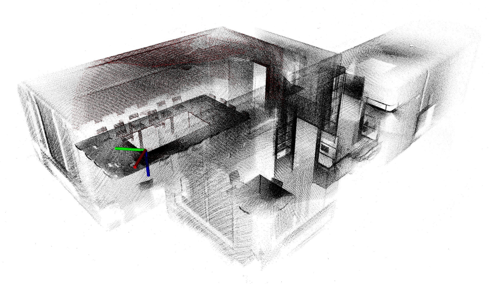
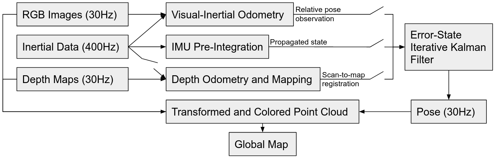
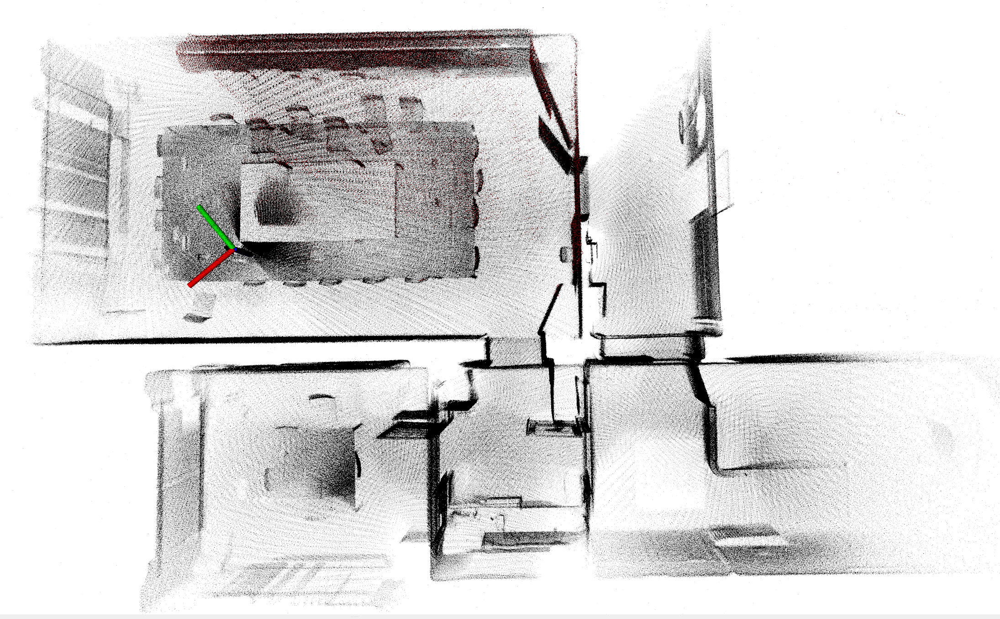
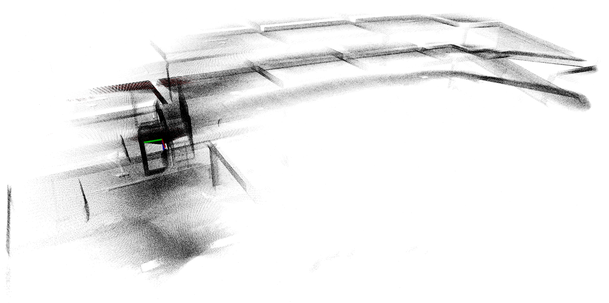
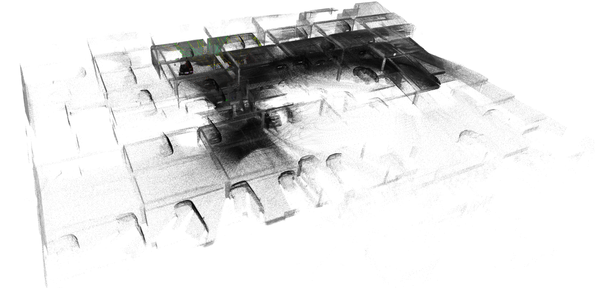
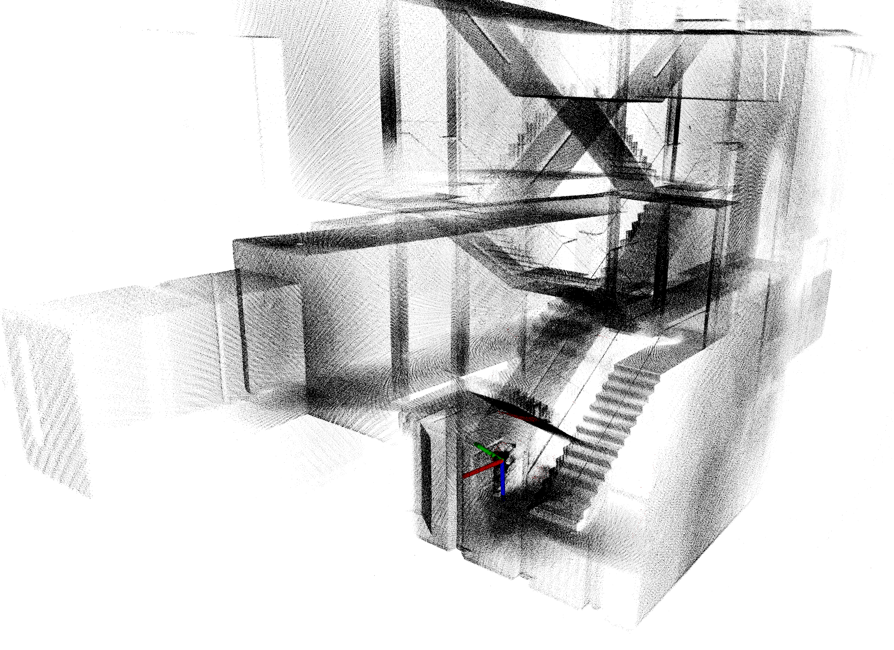
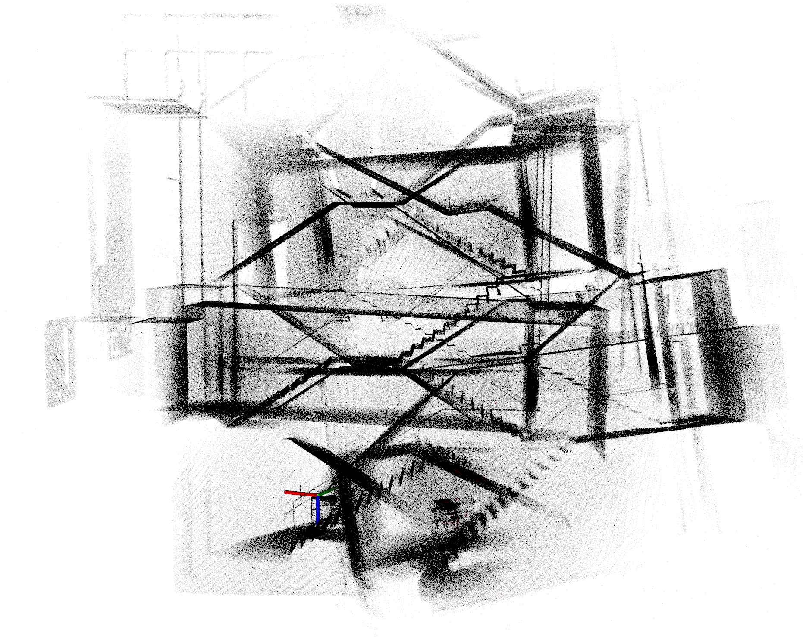
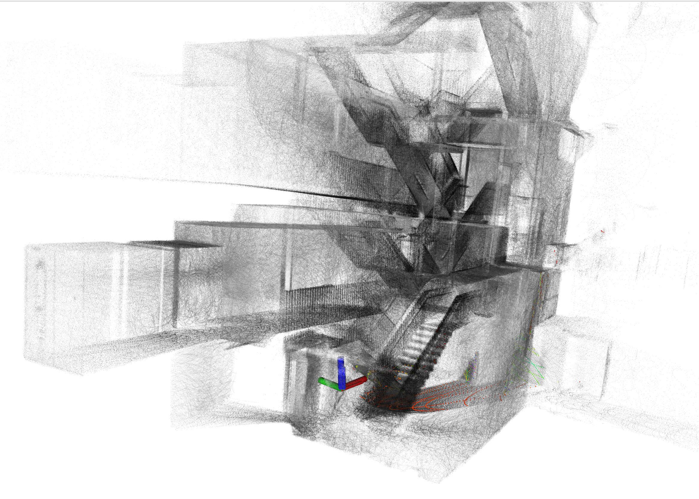

A New Dense 3D Mapping Framework for Portable Sensors
We propose a robust 3D mapping system for indoor spaces based on commercial-off-the-shelf portable depth-visual-inertial sensors.
Overview
Our system leverages the RGB camera, the IMU and the depth camera of common off-the-shelf sensors such as the Microsoft Azure Kinect or the Intel Realsense L515. By combining different sub-systems (visual-inertial odometry (VIO), depth odometry and mapping (DOM), IMU state propagation), our system achieves state-of-the-art performance on challenging mapping datasets.
This web page serves as optional supplementary material for our paper on the DEVIL Mapper system that is currently under revision. For now, we provide additional visualizations, 3D point clouds and videos of the datasets and executions of our proposed algorithm. Later on, we will add more resources such as code, datasets, additional experiments and follow-up work.
Additional visualizations
Experiment I: More results
This video shows the RGB stream of the 4 sequences used in Experiment I:We will now show the resulting point clouds.
1. Class - Map obtained with DEVIL on Azure Kinect

Remark how all walls, ceilings and other elements appear straight and mapped in a sharp manner. Even the corners are very sharp.
2. Meeting - Map obtained with DEVIL on Azure Kinect
Same remark as above.
3. Parking - Map obtained with DEVIL (left) and FAST-LIO2-SLAM (right)
 Notice that since the Azure Kinect's range is far lower than the Livox Avia's range, the map obtained with DEVIL is much less extended than the one with FAST-LIO2-SLAM. However, the trajectory of DEVIL is very close to that of FAST-LIO2-SLAM, indicating that it maps accurately. (Also, we only show every tenth point in this plot, the actual resulting point cloud is ten times denser.)
4. Stairs - Map obtained with DEVIL (left), VoxelMap (center), FAST-LIO2-SLAM (right)
  Here, we can clearly that both DEVIL and FAST-LIO2-SLAM achieve good results, while VoxelMap fails to keep track properly. The resulting map has an evident issue.
Experiment III: Lab loop and corridor
This video shows the RGB stream of various sequences captured in the 2 scenes from Experiment II:Experiment IV: Full-house scan
Additional experiment: multi-story apartment scan
Dataset
The datasets used in Experiments I, III and IV will be released to the public. Unfortunately, we cannot release the dataset for Experiment II due to privacy issues. All datasets will be made available in the form of rosbags, with synchronized topics for the LiDAR-inertial reference system and the depth-visual-inertial sensor system.
Acknowledgements
This research is done in the context of Charles Hamesse's PhD programme, jointly supervised by Ghent University (Prof. Hiep Luong) and the Royal Military Academy of Belgium (Prof. Rob Haelterman). It is funded by the Royal Higher Institute for Defence of Belgium.
Get in touch
Feel free to get in contact with me if you have any feedback, request or simply wish to know more about our work. I'm available at charles.hamesse [at] mil.be.